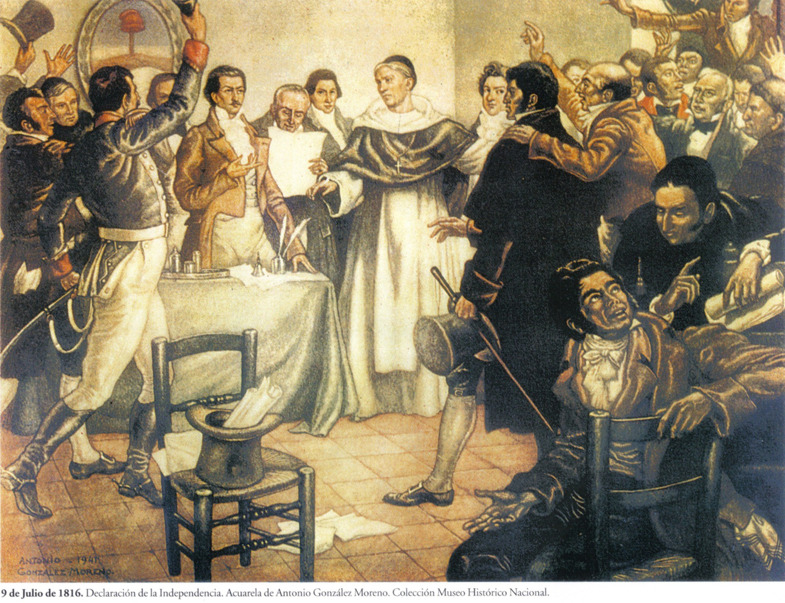

Revolución de Mayo
El 25 de mayo de 1810 se produjo la Revolución de Mayo en Buenos Aires. Este acontecimiento inició un proceso que llevó posteriormente a la independencia de las Provincias Unidas del Río de la Plata.
Macacha Güemes apoyó la causa revolucionaria y colaboró con su hermano Martín Miguel de Güemes.
La defensa del norte
Salta y Jujuy fueron territorios estratégicos durante las guerras de independencia porque las fuerzas realistas podían avanzar desde el Alto Perú.
Martín Miguel de Güemes organizó milicias gauchas para defender la región. Macacha colaboró en tareas de organización, comunicación y apoyo a los patriotas.

Pacto de los Cerrillos
En 1816 existía un conflicto entre Martín Miguel de Güemes y José Rondeau. Macacha participó en las gestiones para solucionar este enfrentamiento.
El Pacto de los Cerrillos fue firmado el 22 de marzo de 1816 y permitió terminar con el conflicto entre ambos sectores patriotas.
Declaración de la Independencia
El 9 de julio de 1816, el Congreso reunido en San Miguel de Tucumán declaró la independencia de las Provincias Unidas del Río de la Plata.
Fue uno de los acontecimientos más importantes de la historia argentina y marcó un paso fundamental para la construcción de nuestro país.

Línea histórica
| Año | Acontecimiento | Importancia |
|---|---|---|
| 1787 | Nacimiento de Macacha | Nació en Salta. |
| 1810 | Revolución de Mayo | Comenzó el proceso revolucionario. |
| 1816 | Pacto de los Cerrillos | Terminó el conflicto entre Güemes y Rondeau. |
| 1816 | Declaración de la Independencia | Se declaró la independencia. |
| 1821 | Muerte de Güemes | Murió Martín Miguel de Güemes. |
| 1866 | Muerte de Macacha | Murió en Salta. |
Monumentos y homenajes
Macacha Güemes es recordada mediante calles, escuelas, monumentos y diferentes homenajes. Su figura es especialmente importante en la provincia de Salta.
Estos homenajes ayudan a reconocer la participación de las mujeres en la historia argentina.
Video
Video educativo relacionado con Macacha Güemes y la Independencia.
Conocer su legado Volver al inicio